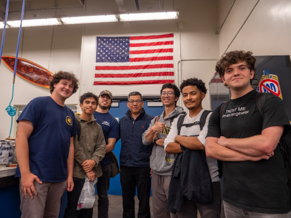

CAD view of final monocoque prototype
Subtask Leadership
As the monocoque team lead, I was responsible for preliminary research to propose the project and forming the subteam. I coordinated weekly meetings, delegated tasks, and ensured that all design and manufacturing processes aligned with team goals. Most valuably, I reached out to industry professionals and students from other universities to provide crucial knowledge to our team.
Technical Oversight
Directed the integration of the laminate schedule with physical mold constraints to ensure manufacturability.
Research
Read multiple research papers and technical documents to understand the best practices for monocoque construction. Reached out to other students and industry professionals to gain insights.


Preliminary Design
An early design during the summer of 2025, this design was mostly a way to test our surface modeling capabilities and get a general idea of the monocoque geometry.

Status
V1.0 Concept Layout
Engineering Challenge
The primary objective was to transition from a traditional steel space-frame to a carbon-fiber reinforced polymer (CFRP) monocoque. However, a lack of experience with large molds combined with low funding meant my team had to perform intense research, prototyping, and testing to ensure that our design met FSAE safety standards as well as the standards of our team.
Key Metric: Stiffness
Targeted a torsional stiffness of 2,500 Nm/deg to ensure predictable suspension kinematics.
Key Metric: Mass
Predicted to reduce primary structure weight by ~22% compared to previous season's steel tube chassis.
Finite Element Analysis (FEA)
Using ANSYS, I conducted extensive simulations to validate the laminate schedule. This involved testing for front impact (20g), side-impact protection, and harness attachment point pull-out strength.

Me [3rd from the right] with most of the monocoque subteam
Team Collaboration
I maintain the belief that a team that can talk comfortably can also work together effectively. Being the subteam lead, I always try to maintain a friendly environment, making time for chatting in combination with our work sessions and weekly meetings.
Methodology
Weekly virtual meetings, in-person manufacturing sessions, and occasional CAD sessions.
My Contribution
- 01 Monocoque Team Lead
- 02 CAD Designer
Project Specifications
- Material Selection Pre-preg Carbon Fiber / Nomex Honeycomb Core
- Software Stack SolidWorks, ANSYS
- Safety Standards FSAE / SES Structural Requirements
- Timeline 8 Months (Concept to Validation)
Role: Lead [and a little bit of everything]
Created the basis for SolidWorks model, laminate schedule, and fully developed the manufacturing plan. Developed full timeline for project using critical path method. Coordinated between subteam members to ensure deadlines were met and oversaw work to ensure a quality final product.